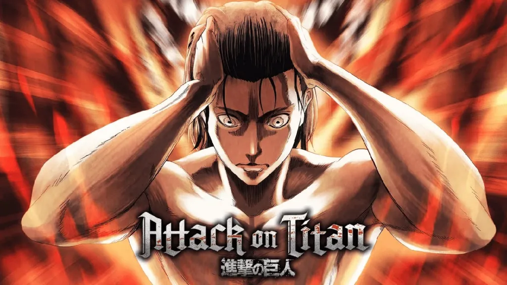

A primeira temporada de Shingeki no Kyojin (進撃の巨人? também conhecido como Attack on Titan), um anime baseado
no mangá de mesmo nome escrito e ilustrado por Hajime Isayama, foi produzida pelo Wit Studio em colaboração com
o Production I.G e exibida originalmente entre 7 de abril e 28 de setembro de 2013 na emissora japonesa MBS.
A história cobre os primeiros 34 capítulos do mangá e narra as aventuras de Eren Yeager e seus amigos Mikasa Ackerman
e Armin Arlert, que vivem em uma cidade cercada por três grandes muralhas, que são a única defesa da humanidade contra
os "titãs", gigantes que comem humanos. Quando um Titã Colossal rompe a muralha de sua cidade natal, os três se
juntam a Divisão de Reconhecimento, um grupo de elite de soldados que lutam contra os titãs, na esperança de recuperar o mundo deles
Os cidadãos temem que estarão à mercê dos Titãs depois de muitos anos de paz.
Gêneros: Aventura, Ação, Fantasia, Anime
Rede: MBSTVJP
Data de Exibição: 7 de abril de 2013
Dirigido por: Tetsuro Araki
Escrito por: Yasuko Kobayashi

Enredo
Attack on Titan se passa em um mundo onde a humanidade vive dentro de cidades cercadas por enormes
Muralhas que os protegem dos Titãs, criaturas humanóides gigantes que devoram humanos aparentemente sem motivo.
A história gira em torno de Eren Jaeger, sua irmã adotiva Mikasa Ackerman e seu amigo de infância Armin Arlert, cujas vidas mudam
para sempre após o aparecimento de um Titã Colossal, que provoca a destruição de sua cidade natal e a morte da mãe de Eren. Jurando vingança
e recuperar o mundo dos Titãs, Eren, Mikasa e Armin se juntam a Divisão de Reconhecimento, um grupo de elite de soldados que lutam contra Titãs fora das Muralhas.
Sendo com toda certeza uma das criaturas mais fortes e mais bem exploradas em toda a história da série,
o Titã de Ataque dá nome à narrativa do anime e mangá que conhecemos como Attack on Titan. Pelo fato de seu nome ser,
literalmente, o da história, já podemos perceber a sua tamanha relevância, certo?
De fato, embora com todos os seus poderes e características bem revelados durante o seguimento da história,
esse Titã parece ter ainda mais habilidades ocultas, que podem vir a superar até mesmo outros Originais e, inclusive, o criador deles: o Fundador.
A primeira temporada foi lançada em 7 de abril de 2013, no Japão.
Nos episódios 1-13, a música-tema de abertura é "Feuerroter Pfeil und Bogen" (紅蓮の弓矢 Guren no Yumiya?,
lit. "Arco e Flecha Carmesim") por Linked Horizon; e a música tema de encerramento é "Utsukushiki Zankoku
na Sekai" (美しき残酷な世界? lit. "Este Lindo Mundo Cruel") por Yōko Hikasa.
Nos episódios 14-25, a música-tema de abertura é "Die Flügel der Freiheit" (自由の翼 Jiyū no Tsubasa?, lit. "Asas da Liberdade")
por Linked Horizon; e a música tema de encerramento é "great escape" por Cinema Staff.
O episódio 25 do anime estreou em 28 de setembro de 2013 e foi exibido em vários cinemas japoneses.[10]
Em 1 de julho de 2019, a quarta temporada de Attack on Titan foi confirmada por
meio de um vídeo que apresentava uma arte idêntica à capa do mangá Volume 26. O vídeo também descreveu
a quarta temporada como sendo a "temporada final" do toda a série de anime.
Em 29 de maio de 2020, um trailer foi lançado para a temporada,[21] revelando que o estúdio de animação mudou
de Wit para MAPPA e que Araki e Koizuka foram substituídos como diretores por Yūichirō Hayashi.[22]
O tema de abertura é "My War" (僕の戦争 Boku no Sensō?) por Shinsei Kamattechan, e o tema final é "Shock" (衝撃 Shōgeki?) por Yuko Ando.[23]